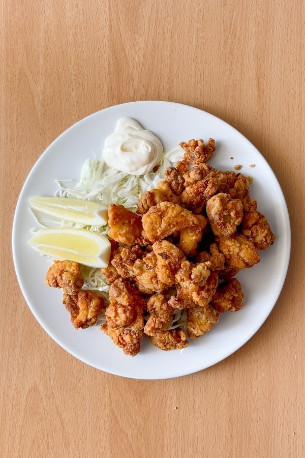
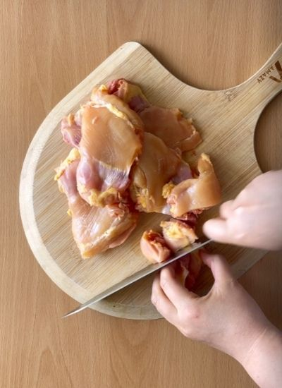
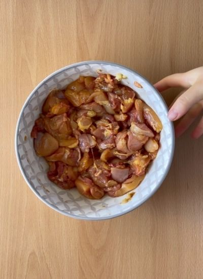
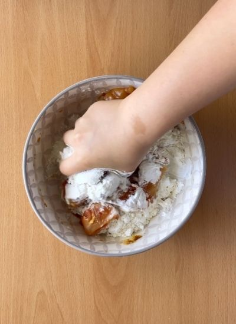
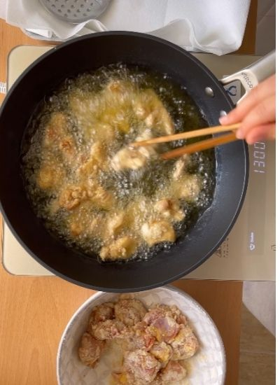
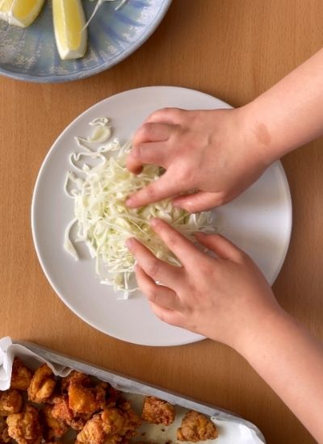

Por probar · Japonesa
← Recetas
Pollo Frito Japonés (Karaage)

Preparación
- Corta el contramuslo en trozos de un bocado.

- Marina con sal, soja, pimienta, ajo y jengibre rallados. Reposa 10-15 min a temperatura ambiente.

- Añade las harinas de maíz y trigo, mezcla, agrega el agua y vuelve a mezclar separando los trozos pegados.

- Primera fritura: aceite a fuego medio-alto, fríe por tandas unos 4 minutos.

- Segunda fritura: sube el fuego a alto y fríe otros 2 minutos por tanda hasta dorar.
- Escurre en papel de cocina, emplata con limón, col y mayonesa. Sirve.
